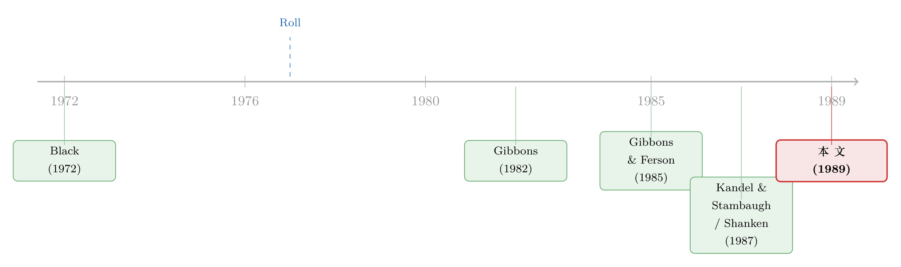

「不必看见市场组合」就能检验 CAPM？——一桩被自家数据反将一军的方法论公案
本文读的是 Wheatley (1989, Journal of Financial Economics)：潜变量检验（latent variable tests）号称不必观测「市场组合」就能检验 CAPM，听上去像是绕过了 Roll 批判的一条捷径。Wheatley 却证明，这类检验真正检验的，不过是「某个成分未知的均值-方差有效组合，是否满足你强加给市场的那个分布假设」——它既会在模型为假时「冤枉地接受」，也无法告诉你拒绝到底是因为模型错了还是假设错了。更狠的是，他用 Gibbons-Ferson 自己的道指 30 日度数据，在四个子区间里的至少三个，复现出了「检验毫无功效」的情形。
1 引言：一桩本该「无法检验」的悬案
资产定价理论里，几乎所有模型最后都会落到同一句话上：某个基准组合（benchmark portfolio）是均值-方差有效的。CAPM 说这个基准是市场组合，跨期 CAPM (intertemporal CAPM, ICAPM) 说它是与代表性投资者边际效用最相关的那个组合，多因子模型说它是由若干因子张成的那个组合。理论给了你一个漂亮的预言，可一旦要拿数据去验证，麻烦就来了——这些基准组合的收益，往往根本测不准，甚至根本观测不到。
这正是 1977 年 Roll 那篇著名批判的核心。Roll 指出，CAPM 检验真正检验的，是「市场组合到底在不在有效前沿上」；而真正的市场组合——把全世界所有可投资财富都装进去的那一篮子——你永远凑不齐。于是他撂下一句近乎判决书的话：「实际上几乎没有可能……完成一次（对该模型的）检验。」
这句话像一道幽灵，缠了资产定价实证整整十几年。（关于在没有无风险资产、市场组合又不可观测时，人们如何换着花样想给「市场组合有没有效」下判决，可参见《没有无风险资产的世界里，怎样给「市场组合有没有效」下判决》与《九十重积分，只为问一句：市场组合到底有没有效》。）
接着，一条看似聪明的逃逸路线出现了。Gibbons 和 Ferson（1985）说：既然测不准市场收益，那我干脆不用市场收益的时间序列。我只要对「可观测的资产收益」和「不可观测的市场收益」的联合分布做一个假设，CAPM 加在条件期望收益上的限制，就能被改写成一组只涉及可观测变量的、可检验的约束。他们因此自信地宣称：「（我们建议的）方法……不受 Roll 批判之困。」
这就是本文要拆的那块招牌。Wheatley 的全部工作，就是要说明这条逃逸路线其实是一种错觉——而且他不是靠嘴说，而是回到 Gibbons-Ferson 的原始数据，把「这套检验可能毫无功效」这件事，结结实实地演示了一遍。
2 一个看似漂亮的逃逸：潜变量检验怎么绕开市场组合
要看懂这场争论，得先弄明白潜变量检验那一步「偷天换日」究竟换掉了什么。
我们用 Gibbons-Ferson 检验的 Black（1972）版 CAPM 来讲。这个版本说：市场组合落在均值-方差有效前沿正斜率的那一段上。设市场组合在 t-1 时刻所有可用信息 \(\phi_{t-1}\) 下都是有效的，那么对任意一组资产 \(j=1,2,\ldots,N\)，条件期望收益满足
$$E(r_{jt}\mid \phi_{t-1}) - E(r_{0t}\mid \phi_{t-1}) = \beta_{jt}\big[E(r_{mt}\mid \phi_{t-1}) - E(r_{0t}\mid \phi_{t-1})\big]$$
这就是论文的式 (1)：\(r_{mt}\) 是市场收益，\(r_{0t}\) 是与市场不相关的零 beta 组合（zero-beta portfolio）收益，\(\beta_{jt}\) 是条件 beta。麻烦显而易见：右边那个 \(r_{mt}\)，正是 Roll 说你永远观测不到的东西。
那怎么把它「消掉」？这里是第一步关键。式 (1) 是一条直线：在「期望收益—beta」平面上，所有资产都排在一条直线上。既然是直线，任意第三只资产的期望收益，就能写成另外两只资产期望收益的线性组合——直线只要两点就能定。于是论文得到式 (2)：
$$E(r_{jt}\mid \phi_{t-1}) = E(r_{1t}\mid \phi_{t-1}) + a_{jt}\big[E(r_{2t}\mid \phi_{t-1}) - E(r_{1t}\mid \phi_{t-1})\big],\qquad a_{jt}=\frac{\beta_{jt}-\beta_{1t}}{\beta_{2t}-\beta_{1t}}$$
看这一步妙在哪里：式 (2) 里再也没有 \(r_{mt}\)，也没有 \(r_{0t}\) 了。市场收益和零 beta 收益，被这条「共线性」一笔勾掉，只剩下可观测资产 1、2、\(j\) 的期望收益，外加一组斜率系数 \(a_{jt}\)。
然后，一个自然的问题是：\(a_{jt}\) 本身还带着下标 \(t\)，它会随时间变，仍然不好对付。Gibbons-Ferson 于是补上两个假设。
第一个是常数 beta 假设（A1）：条件 beta 向量 \((\beta_{2t},\beta_{3t},\ldots,\beta_{Nt})\) 不随时间变化，于是 \(a_{jt}=a_j\) 也成了常数。第二个是线性假设（A2）：期望收益对信息 \(x_{t-1}\) 线性，
$$r_{jt}=\delta_j' x_{t-1}+\varepsilon_{jt},\qquad E(\varepsilon_{jt}\mid x_{t-1})=0,\quad j=1,2,\ldots,N$$
其中 \(x_{t-1}\) 是一个 \(L\times 1\) 的信息向量，\(\delta_j\) 是 \(L\times 1\) 的常数系数向量。A2 是可以检验的（它只涉及可观测收益），而 A1——注意——是一个关于收益与不可观测市场收益之联合分布的假设。
3 模型设定与那「一个秩条件」
把 A1、A2 代回式 (2)，就走到了整篇论文方法论上的命门。
由 A2，\(E(r_{jt}\mid\phi_{t-1})=\delta_j' x_{t-1}\)。代入式 (2)，并要求它对所有可能的 \(x_{t-1}\) 都成立，于是括号外的 \(x_{t-1}\) 可以约去，得到一组只关于回归系数的限制——论文的假设 \(H_1\)：
这个 \(H_1\) 的几何含义极其干净：它说矩阵 \((\delta_2-\delta_1,\ \delta_3-\delta_1,\ \ldots,\ \delta_N-\delta_1)\) 的秩等于 1——所有资产「相对资产 1 的敏感度之差」都共线，都只指向 \((\delta_2-\delta_1)\) 这一个方向，区别只在一个标量 \(a_j\)。论文指出，当 \(L\ge 2\)、\(N\ge 3\) 时，这个秩条件对多元回归的参数施加了 \((L-1)(N-2)\) 个可检验的限制。
到这里，Gibbons-Ferson 的逻辑链就闭合了：
首先，对资产收益与市场收益的联合分布做一个假设（A1）；接着，在此假设下，CAPM 的限制等价于一个只含可观测量的秩条件 \(H_1\)；然后，用多元回归把 \(H_1\) 检验出来——全程不需要市场收益序列。最后，如果拒绝 \(H_1\)，就一并拒绝「市场组合均值-方差有效」。
逻辑无懈可击。问题恰恰出在它太无懈可击了。
4 Roll 的幽灵：为什么这其实什么都没检验
但真正关键的一步在于：这个秩条件，到底属于谁？
Roll 在 1977 年还证明过另一件事——CAPM 那样的「期望收益—beta」线性关系，并非市场组合的专利，它对任意一个均值-方差有效组合都成立。把式 (1) 里的「市场组合」换成有效前沿上任何一个组合，等式照样成立。
于是反转出现了。Wheatley 顺着这条线推下去：既然 CAPM 式的限制对任意有效组合都成立，那么秩条件 \(H_1\)，也就会在任何一个满足常数 beta 假设、且期望收益对信息线性的有效组合存在时成立。换句话说——
对秩条件 \(H_1\) 的检验，根本不是在检验「市场组合有没有效」。它检验的是：「存不存在某个成分未知的均值-方差有效组合，其收益满足你强加给市场的那个分布假设。」
这就把 Gibbons-Ferson 的检验逻辑彻底改写了。他们以为自己在问「市场组合有效吗」，实际上问的是「有没有某个有效组合恰好满足 A1」。这两个问题之间，隔着 Roll 的整条批判。
具体而言，这套检验真正的工作方式是这样的：第一，对资产收益与市场收益的联合分布做个假设；第二，检验「存在一个满足该假设的均值-方差有效组合」这一命题；第三，只有当你额外愿意相信「市场的条件 beta 确实是常数」时，拒绝秩条件才能被读成拒绝 CAPM——因为此时若没有任何有效组合满足常数 beta，而市场 beta 又恰是常数，那市场组合就不可能有效。
而这个「额外愿意相信」的桥，恰恰塌了。问题有两层：
第一层，假设本身不可检验。 A1 是关于市场收益分布的假设，可市场收益不可观测——你没法检验一个你看不见的东西的分布。
第二层，没有任何理论替你挑这个假设。 没有哪个资产定价模型会告诉你「市场的条件 beta 应该是常数」而不是别的什么。所以当检验拒绝时，你永远分不清，是模型错了，还是这个凭空挑来的分布假设错了。这正是「联合假设问题」最纯粹的形态。（一个相关的认识论提醒是：检验「不能拒绝」并不等于「支持」，反过来「拒绝」也可能只在打那个分布假设的脸，参见《「不能拒绝」就等于「支持」吗？——给套利定价理论换一把尺子》。）
值得停一下的是常数 beta 这个假设。需要市场收益序列的传统 CAPM 检验，也常假设 beta 不变（Gibbons 1982、Stambaugh 1982、Shanken 1985a 都这么做）；但它们把市场收益当作可观测的，所以这个假设能被检验。潜变量检验把市场收益当作不可观测的，于是同一个假设就成了无法证伪的前提。而 Cox-Ingersoll-Ross（1985）的一般均衡框架里，既能造出 A1 成立的例子，也能轻松造出它不成立的例子——比如当条件期望收益依赖状态变量、条件方差-协方差矩阵不变、收益又与状态变量条件不相关时，市场组合是有效的，可它的成分会随时间变，常数 beta 假设根本不成立。（条件 beta 究竟有多「会动」、被当成常数会漏掉多少风险，可参见《时变的 beta，被低估了二十年的风险》。）
这一节是全文的「核」：潜变量检验最多只是「关于某个成分未知的有效组合的分布假设检验」，而不是对某个具体资产定价模型的检验。它没有逃出 Roll 批判，只是把批判藏进了一个不可观测的分布假设里。
5 用对手自己的数据反将一军
讲到这里，怀疑论者可能会说：你说检验「可能」无功效，可那只是逻辑上的可能性，现实里未必发生啊。
Wheatley 的回应漂亮且不容回避：那就用 Gibbons-Ferson 自己的数据来看，这个「可能性」是不是真的发生了。
Gibbons-Ferson 当年没能拒绝 CAPM。他们用的是道琼斯 30 只成分股的日度收益，信息集 \(x_{t-1}\) 里放了一个常数、CRSP 价值加权指数的滞后收益、以及一个「周一为 1、其余为 0」的虚拟变量。Wheatley 抓住一个简单的事实：道指 30 只是全部资产里的一个子集，所以从这 30 只股票构造出的任何有效组合，都不可能是真正的市场组合。那么——若能证明「从道指 30 构造的每一个有效组合都满足那个分布假设」，就等于证明了：在这批数据上，Gibbons-Ferson 的检验确实毫无功效，因为它会被一堆「冒牌有效组合」满足，而这些组合没有一个是市场。
为把这件事落到可操作的检验上，Wheatley 把分布假设具体化为两条「常数比率假设」，并放进下面这个多元回归（论文表 1）：
$$r_{jt}=\delta_{0j}+\delta_{1j}D_t+\delta_{2j}r_{m,t-1}+\varepsilon_{jt},\qquad j=1,2,\ldots,30$$
$$(\varepsilon_{1t},\ldots,\varepsilon_{30t})'\sim N\big(0,\ \Omega_0+\Omega_1 r_{m,t-1}^2\big)$$
这里 \(D_t\) 是周一虚拟变量，\(r_{m,t-1}\) 是 CRSP 价值加权指数滞后收益，\(\Omega_0\)、\(\Omega_1\) 是 \(30\times30\) 的参数矩阵——注意条件方差被允许随 \(r_{m,t-1}^2\) 变动，这与 French、Schwert、Stambaugh（1987）的波动率建模一脉相承。两条假设是：
- (A3) 条件期望收益比率恒定：\(\delta_j=\gamma_j\,\delta_1,\ j=2,3,\ldots,30\)，\(\gamma_j\) 为标量。
- (A4) 条件收益波动率比率恒定：\(\Omega_1=\psi\,\Omega_0\)，\(\psi\) 为标量。
如果 A3、A4 都成立，那么从道指 30 构造的有效组合，其 beta 就都是常数——常数 beta 假设在这个子集上成立，检验也就无功效了。两条假设用拉格朗日乘子（Lagrange multiplier, LM）统计量检验，样本是 1962 年 8 月 17 日到 1980 年 12 月 31 日的日度数据，分成四个子区间，每段约 1150 天（\(T=1149,1151,1150,1151\)）。
结果是这样的（表 1 的 A 栏）：
条件期望收益比率恒定（A3）在四个子区间里全都没被拒绝。 四段的 LM 统计量是 68.933、58.756、68.253、69.141，对应的 p 值分别是 0.172、0.492、0.180、0.184；合并四段后总统计量 265.083，p 值 0.109。这组限制的自由度恰好是 \((L-1)(N-2)=2\times28=56\) 上下（渐近均值约 58），统计量都老老实实落在分布里。
条件波动率比率恒定（A4）只在第一个子区间被拒绝。 四段 LM 统计量是 2020.037、883.357、901.449、1056.358，p 值 0.000、0.220、0.800、0.660；合并后 4862.201，p 值 0.011。也就是说，A4 在第二、三、四段都不被拒绝，只在第一段被压倒性地拒绝，从而拖累了整体。
把两条放在一起：在四个子区间里的三个，A3 和 A4 同时不被拒绝——这意味着 Wheatley 那个「检验无功效」的例子，和 Gibbons-Ferson 的数据是相容的。于是结论落地：Gibbons-Ferson 虽然没拒绝 CAPM，但至少在四段中的三段，数据完全支持「他们的检验根本没有功效」这一假说。顺带一提，表 1 的 B 栏（极大似然估计）显示，「条件期望收益恒定」与「条件方差-协方差矩阵恒定」这两个限制，在所有子区间都被强烈拒绝（\(\delta_{21}\) 的整体检验量高达 11.127，\(\psi\) 高达 14.524）——收益的条件矩确实在随信息变动，模型设定不是退化的。
那第一段里 A4 的那个「拒绝」呢？这正是附录里 bootstrap 模拟（表 2）要回答的，而它给出的答案，反而让 Wheatley 的结论更稳。基于第一子区间、250 次重抽样，A3 的 LM 统计量表现良好：在 50%、10%、5%、1% 名义水平上的实际拒绝频率分别是 0.552、0.124、0.080、0.024，几乎贴着名义水平；它的模拟均值 59.010 也和渐近均值 58.000 吻合。可 A4 的 LM 统计量则彻底失控：在所有名义水平上的拒绝频率都是 1.000——也就是说，哪怕原假设为真，这个检验也几乎必然拒绝。它的模拟均值 864.422 是渐近均值 464.000 的将近两倍，模拟标准误 148.581 更是渐近值 30.463 的五倍，学生化极差 8.519 远超分布的 0.99 分位。
换句话说，A4 在第一子区间的那次「拒绝」，极可能只是小样本里检验严重过度拒绝（over-rejection）的产物，而非真有证据。把这一点考虑进去，数据与「检验无功效」相容的，恐怕就不止三个子区间了。对手用来「接受 CAPM」的数据，反过来成了「这套方法可能压根测不出东西」的证据——这一招反将得相当干净。
6 文献脉络
把这场争论放回时间线上，它的位置就格外清楚了。
源头是 Black（1972）的零 beta CAPM，它给出了「市场组合落在有效前沿正斜率段上」这个可供检验的预言。紧接着，Roll（1977）那篇 Part 1 批判像一盆冷水：市场组合不可观测，所有 CAPM 检验其实都是「市场组合有没有效」的联合检验，而且 CAPM 式限制对任意有效组合都成立——这两点，正是本文反复借用的两把刀。
接着是「正面强攻」的一脉：Gibbons（1982）、Stambaugh（1982）、Shanken（1985a）发展了在可观测市场代理下的多元 CAPM 检验，它们老实地承认要用市场收益序列，也因此能检验常数 beta 假设。
然后，一个自然的问题是：能不能干脆不用市场收益？Gibbons-Ferson（1985）的潜变量检验给出了一条「绕道」的答案，并宣称摆脱了 Roll 批判。几乎同时，Kandel-Stambaugh（1987）与 Shanken（1987）走的是另一条「带着 Roll 批判生活」的路——用可观测代理加上「代理与市场相关性」的假设来做检验；可那个相关系数同样不可观测，所以他们也并未完全绕过 Roll。Hansen-Richard（1987）则厘清了条件有效与无条件有效之间的微妙关系，提醒人们「条件有效的组合可能无条件无效」。

本文（Wheatley 1989）所处的位置，就是给这条「潜变量逃逸路线」盖棺定论：它把 Gibbons-Ferson 的逻辑拆开，证明这套检验顶多是「关于未知成分有效组合的分布假设检验」；并且这一批评不限于 CAPM——Lucas（1978）、Breeden（1979）那一脉的跨期/消费 CAPM，乃至 Shanken（1985b, 1987）、Campbell（1987）讨论的多因子模型，其潜变量检验都面临同样的解释困境，区别只在于所依赖的那个不可观测分布假设换了对象。
7 评论与延伸（Q&A + 研究方向）
(a) 几个可能的疑问
Q：潜变量检验「无功效」，是不是等于说它一无是处？
不完全是。Wheatley 自己指出了一条退路：如果你先验地假定某个资产定价模型成立，那么潜变量检验可以被重新解读为关于「风险随时间如何变化」的假设检验。只是即便这样，它也可能没有功效——在 CAPM 框架下，当相对市场度量的风险时变时，相对其他有效组合度量的风险却可能恒定，于是检验照样测不出名堂。
Q：这跟直接说「CAPM 检验是联合假设检验」有什么新意？
Roll 说的是「模型 + 市场组合代理」的联合假设。Wheatley 多走了一步：潜变量检验自以为通过「不使用市场代理」摆脱了联合假设，结果只是把代理换成了一个不可观测且无理论指导的分布假设（A1）。新意在于点明——逃避观测市场组合，并不能逃避联合假设，反而让那一半假设变得更不可检验。
Q：式 (2) 把市场收益消掉，这一步本身有问题吗？
这一步在数学上没问题，它只是有效前沿线性结构的直接推论。真正的问题在 A1：把 \(a_{jt}\) 钉成常数 \(a_j\)，等价于对市场 beta 的时间行为下了一个不可检验的断言。消掉 \(r_{mt}\) 是合法的，但代价是把识别的重担全压在了 A1 上。
Q：实证里 A4 被拒绝了，为什么还说「数据与无功效相容」？
因为 bootstrap 显示 A4 的 LM 检验在小样本里几乎 100% 过度拒绝——它的拒绝不可信。而表现良好的 A3 在四段全都不被拒绝。把可信的证据（A3）和不可信的证据（被过度拒绝的 A4）分开看，结论是数据并不能把「无功效」这个假说推翻。
Q：那 Kandel-Stambaugh、Shanken 的「代理 + 相关性假设」路线，是不是好一些？
方向上更诚实——他们明说自己「带着 Roll 批判生活」。但 Wheatley 的脚注点破：他们假设的「代理与市场收益的（多重）相关系数」同样不可观测，所以也没有完全绕开 Roll。差别更多是程度而非性质。
Q：这篇 1989 年的批判，对今天的因子模型还有意义吗？
有。任何「某组因子张成的组合是均值-方差有效的」之类的论断，一旦因子组合不可直接观测、或要靠分布假设来识别，都会落入同样的解释陷阱：你检验的可能只是「存在某个满足该假设的有效组合」，而非你心仪的那个因子模型。
(b) 几个可能的研究问题与提案
1. 把这套批判搬到公司债的因子模型上。 【经济故事】公司债的「市场组合」比股票更难观测——成交稀疏、报价噪声大，常用的债券指数本身就是一个粗糙代理。若有人用潜变量式的方法去检验信用因子模型，Wheatley 的批判几乎原样适用：拒绝可能只是在打那个不可观测分布假设的脸。 【可行性】中。需要 TRACE 成交数据与债券特征，识别策略上可借鉴本文——构造「子集有效组合」并检验其分布假设是否被数据相容地满足；难点在债券收益的条件矩估计噪声大，需要审慎的小样本/bootstrap 校准（正如本文表 2 的做法）。
2. 用 bootstrap「体检」表，系统排查当代资产定价检验里的过度拒绝。 【经济故事】本文最被低估的一笔，是表 2 揭示的 LM 统计量在大维度下的严重过度拒绝（\(N=30\)、限制数达数百时）。如今因子动物园里的 GRS、GMM 检验动辄面对成百上千个测试资产，渐近临界值是否还可信，是个真问题。 【可行性】高。纯方法论 + 模拟，数据现成（已发布的因子与组合收益），识别清晰：对一批主流检验做统一的有限样本校准，报告「名义 5% 实际是多少」。这是一个 doable 且有现实影响的项目。
3. 外资持有人能否充当「可观测的有效组合代理」？ 【经济故事】Roll 批判的死结是市场组合不可观测。但在某些跨境市场里，全球机构投资者的总持仓接近「可投资财富」的一个干净切片。若把外资可投资组合当作代理，是否能在一个特定市场上做出比纯潜变量更可检验的资产定价检验？ 【可行性】中偏低。需要细颗粒的跨境持仓数据（如某市场的外资持仓登记），且代理与「真市场」的差距仍需假设——本质上仍未完全逃出 Roll，但比纯潜变量多了一层可观测性，值得一试。
4. 流动性因子的「有效组合」身份检验。 【经济故事】流动性被广泛当作定价因子，但「流动性模仿组合」的成分高度依赖构造方法。把本文的秩条件思路反过来用：检验不同构造法得到的流动性组合，是否都落在同一条「期望收益—beta」直线上——若是，则它们的定价含义无法区分，正对应 Wheatley 的「无功效」。 【可行性】高。数据为股票/债券收益与流动性度量，方法为秩检验，识别明确。
5. 把「分布假设不可检验」量化成一个敏感性区间。 【经济故事】本文是定性批判：假设不可检验。能否更进一步，给定一族合理的 A1 替代假设，刻画出检验结论（接受/拒绝 CAPM）随假设变动的取值范围？这相当于给潜变量检验配一个「假设敏感性带」。 【可行性】中。属偏理论+模拟，需在 CIR（1985）这类一般均衡框架里参数化「市场 beta 的时变方式」，再追踪结论如何随之翻转——本文已经指出该框架既能造出 A1 成立也能造出不成立的例子，这是天然的起点。
参考文献
- Black, F. (1972). Capital market equilibrium with restricted borrowing. Journal of Business 45, 444–454.
- Breeden, D. T. (1979). An intertemporal asset pricing model with stochastic consumption and investment opportunities. Journal of Financial Economics 7, 265–296.
- Breusch, T. S., & Pagan, A. R. (1979). A simple test for heteroskedasticity and random coefficient variation. Econometrica 47, 1287–1294.
- Campbell, J. Y. (1987). Stock returns and the term structure. Journal of Financial Economics 18, 373–400.
- Cox, J. C., Ingersoll, J. E., & Ross, S. A. (1985). An intertemporal general equilibrium model of asset prices. Econometrica 53, 363–384.
- Efron, B. (1982). The Jackknife, the Bootstrap and Other Resampling Plans. SIAM, Philadelphia.
- French, K. R., Schwert, G. W., & Stambaugh, R. F. (1987). Expected stock returns and volatility. Journal of Financial Economics 19, 3–29.
- Gibbons, M. R. (1982). Multivariate tests of financial models: A new approach. Journal of Financial Economics 10, 3–27.
- Hansen, L. P., & Richard, S. F. (1987). The role of conditioning information in deducing testable restrictions implied by dynamic asset pricing models. Econometrica 55, 587–613.
- Kandel, S., & Stambaugh, R. F. (1987). On correlations and inferences about mean-variance efficiency. Journal of Financial Economics 18, 61–90.
- Lucas, R. E., Jr. (1978). Asset prices in an exchange economy. Econometrica 46, 1429–1446.
- Merton, R. C. (1973). An intertemporal capital asset pricing model. Econometrica 41, 867–887.
- Roll, R. (1977). A critique of the asset pricing theory's tests — Part 1: On past and potential testability of the theory. Journal of Financial Economics 4, 129–176.
- Shanken, J. (1985a). Multivariate tests of the zero-beta CAPM. Journal of Financial Economics 14, 327–348.
- Shanken, J. (1985b). Multi-beta CAPM or equilibrium APT? A reply. Journal of Finance 40, 1189–1196.
- Shanken, J. (1987). Multivariate proxies and asset pricing relations: Living with the Roll critique. Journal of Financial Economics 18, 91–110.
- Stambaugh, R. F. (1982). On the exclusion of assets from tests of the two-parameter model: A sensitivity analysis. Journal of Financial Economics 10, 237–268.
- Wheatley, S. M. (1989). A critique of latent variable tests of asset pricing models. Journal of Financial Economics 23, 325–338.